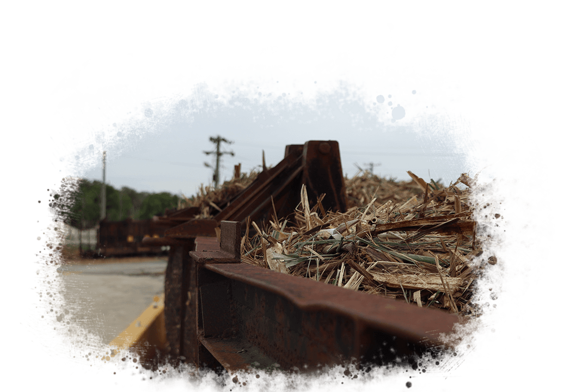
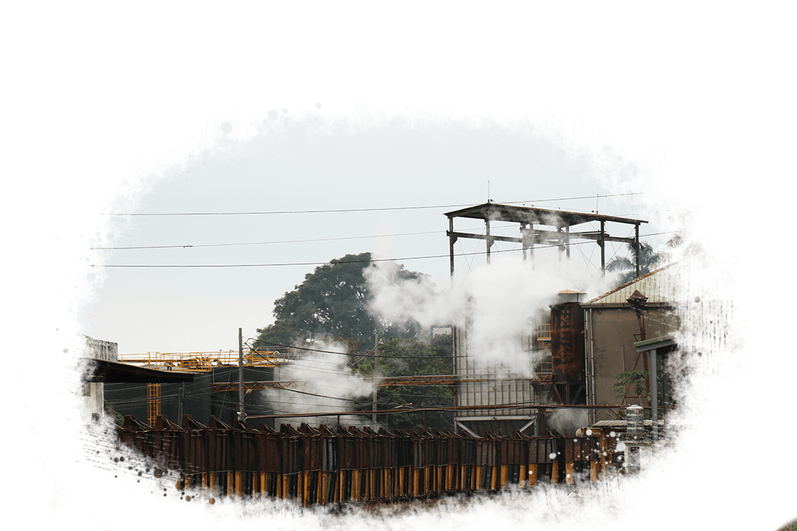

根據歷史學者考證，遠古時期並沒有甘蔗，南島語系原住民將一種類似牧草的禾本科植物帶往亞洲，再與當地植物雜交，無形中產生了甘蔗。
由於印度人在無形中提煉甘蔗汁而產生了糖，誕生了製糖產業的雛型；在西元四世紀，亞歷山大在印度發動戰爭時，士兵發現了製糖產業並帶回歐洲； 接下來的十字軍東征、大航海殖民時代，歐洲國家將此產業繼續擴散至全球。
由於印度人在無形中提煉甘蔗汁而產生了糖，誕生了製糖產業的雛型；在西元四世紀，亞歷山大在印度發動戰爭時，士兵發現了製糖產業並帶回歐洲； 接下來的十字軍東征、大航海殖民時代，歐洲國家將此產業繼續擴散至全球。
1624年荷蘭人占據台灣，讓漢人從事糖的生產，再出口到日本獲取商業利潤；
早期的製糖場所被稱為
「糖廍」
，仰賴獸力壓出甘蔗汁，再放入大鍋熬煮，等到水分蒸發完畢，繼續炒乾後就會形成粉狀的黑糖； 做法非常原始，沒有一定的規模及生產效率。
製糖流程
農場的甘蔗運送到糖廠之後，
會先透過履帶進行
除砂
，接著利用切蔗機的蔗刀先將甘蔗切成好幾段， 再透過壓碎機將甘蔗壓脆
，細裂機再處理得更細碎， 在壓蔗時每一次才會平均的壓出甘蔗汁。
細碎的甘蔗會透過
四重壓榨機
，壓出甘蔗汁，經過第一個壓榨機會壓出一定量的蔗汁，第二個壓榨機同理，但到了第三個壓榨機的時候已經壓不出東西了，但是甘蔗渣還會殘留一些糖，所以會將蔗渣撒水，在第四個壓榨機中，將糖份盡可能全數壓榨出來。
壓完之後產生的
甘蔗渣
， 會被運送到鍋爐當成燃料
， 透過燃燒產生的蒸氣提供發電機發電，這些電力可以提供整個糖廠，蒸氣也能成為甘蔗汁清淨過濾的能源。
壓好的甘蔗汁會送到加熱槽，運用
蒸氣加熱
， 接著送到碳酸塔中，將裡面的雜質透過石灰法沉澱
，比較髒的甘蔗汁會沉澱在下面，這些會經由壓濾機較細的網子將剩餘的甘蔗汁處理出來，且剩下許多的濾泥。
上面就會是乾淨的甘蔗汁，可以挑選出來送到四重效用罐進行
加熱濃縮
，濃縮至百分之六十五之後會輸送到結晶罐，運用蒸氣將糖煮到一定規格，再透過分蜜機，利用離心
的方式將糖蜜甩成生活中常見的砂糖。
以上就是整個製糖的大致流程
酒精槽
虎尾糖廠內部有一個古蹟景點，就是
民國60年間因為設備老舊，生產效率降低，造成嚴重虧損，在民國64年拆遷至新營，只保留了酒精槽防空磚牆。
根據虎尾糖廠陳先生所說，此種方法是
甘蔗渣也曾被作為建材甘蔗板，但因為建材逐漸精緻化，此產物被淘汰，原先的造紙也因為造成汙染而停止生產。
現在則將甘蔗渣混合糖蜜及豬隻的排泄物，做成有機堆肥，此舉不僅對環境有益，也能充分達到循環經濟的意義。
虎尾糖廠酒精槽
。 在製糖的過程中，主要產物為砂糖，副產物則會留下糖蜜、甘蔗渣等等，日本人發現糖蜜可做為製造酒精的原料，於是在大正15年創設酒精工場， 供給飛機所需燃料
，當時為亞洲最大的酒精工場。民國60年間因為設備老舊，生產效率降低，造成嚴重虧損，在民國64年拆遷至新營，只保留了酒精槽防空磚牆。
根據虎尾糖廠陳先生所說，此種方法是
循環經濟
的一部份，日治時期利用糖蜜提煉酒精，而在光復早期，糖蜜用來提煉酵母、酵素，做成健素糖，除了健素之外，糖蜜還可提煉酒精，供給下游廠商出產味精與味素。甘蔗渣也曾被作為建材甘蔗板，但因為建材逐漸精緻化，此產物被淘汰，原先的造紙也因為造成汙染而停止生產。
現在則將甘蔗渣混合糖蜜及豬隻的排泄物，做成有機堆肥，此舉不僅對環境有益，也能充分達到循環經濟的意義。

製糖流程圖